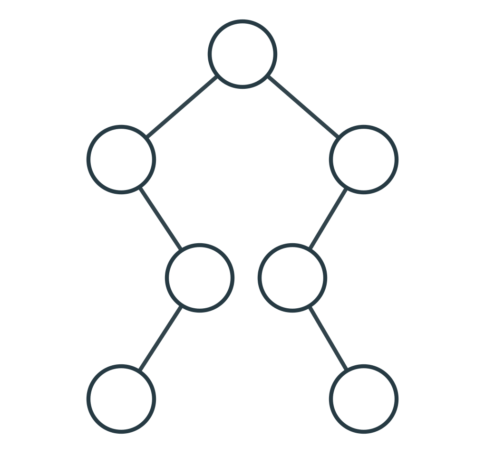

数据结构
2017-05
二叉树的遍历和线索二叉树已知一棵二叉树的树形如右图所示，其后序序列为 e, a, c, b, d, g, f，树中与结点 a 同层的结点是__。

答案
5
答案：B
本题讲解：由后序序列＋树形反推结点层次
答案：B（与 a 同层的是 d）。
第零步：先立机制——后序"左·右·根"决定谁排最后
后序遍历中，任何结点都要等它的整棵子树输出完才轮到自己，所以序列最后一位一定是整棵树的根 f。同理，把 f 的左右子树切开之后，每段的末位就是该子树的根——后序的"末位定根"在每一层都成立。
第一步：按树形切分左右子树
切分位置不能猜，由题图决定：根有两个孩子，两个孩子各只带一个孩子，各孙子也各只带一个孩子，共 1+2+2+2 = 7 个结点，左右子树各 3 个。于是后序 e a c b d g f 切成：左子树 e a c，右子树 b d g。
第二步：单链子树自底向上定层
为什么单链的后序恰好是"从叶到根"？ 链上每层只有一个孩子，后序 = "孩子子树的后序 + 自己"，递归展开就是：叶子、叶子的父亲、……、子树根，逐层向上。所以左段 e a c → c（第 2 层，左子树根）、a（第 3 层）、e（第 4 层）；右段 b d g → g（第 2 层）、d（第 3 层）、b（第 4 层）。
| 层号 | 1 | 2 | 3 | 4 |
|---|---|---|---|---|
| 结点 | f | c、g | a、d | e、b |
第三步：回答问题并核对干扰项
a 在第 3 层，同层的只有 d → 选 B。其余三项为什么不对：f 是根（第 1 层）；c、g 在第 2 层——它们与 a 同在一条（子）链上却高一层，把"同子树/同链"误当"同层"，正是误选 C、D 的来源；f 则是最高的祖先。
易错点
- 跳过"树形定切分"这一步：不先由图确定左 3 右 3，后序就没法切，切错一段层次全错。
- 层次数错起点：根是第 1 层，a、d 在第 3 层而不是第 2 层。
- 混淆"同层"与"同子树"：c、g 与 a 同在半边子树里，但层号不同。
一句话结论：后序末位定根 → 树形定左右段 → 单链段后序自叶向根逐层读出，a、d 同在第 3 层。